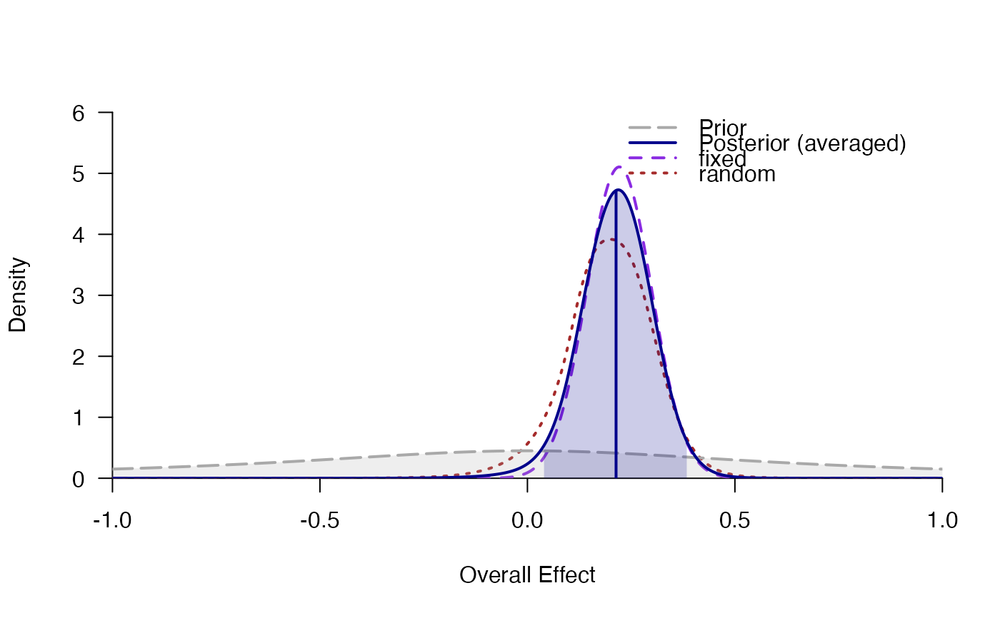
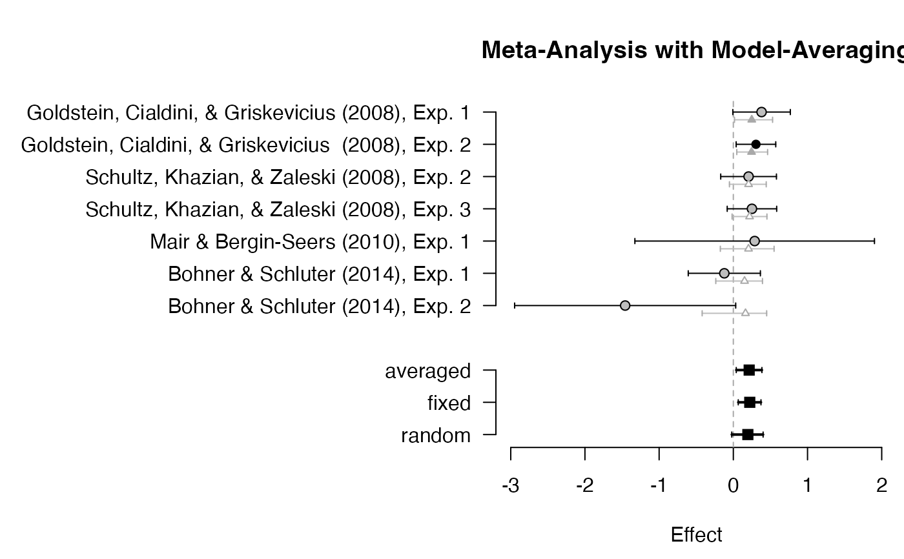

Model averaging for different meta-analysis models (e.g., random-effects or fixed-effects with different priors) based on the posterior model probability.
bma( meta, prior = 1, parameter = "d", summarize = "integrate", ci = 0.95, rel.tol = .Machine$double.eps^0.5 )
| meta | list of meta-analysis models (fitted via
|
|---|---|
| prior | prior probabilities over models (possibly unnormalized). For instance, if the first model is as likely as models 2, 3 and 4 together: |
| parameter | either the mean effect |
| summarize | how to estimate parameter summaries (mean, median, SD,
etc.): Either by numerical integration ( |
| ci | probability for the credibility/highest-density intervals. |
| rel.tol | relative tolerance used for numerical integration using
|
# \donttest{ # model averaging for fixed and random effects data(towels) fixed <- meta_fixed(logOR, SE, study, towels) random <- meta_random(logOR, SE, study, towels) averaged <- bma(list("fixed" = fixed, "random" = random)) averaged#> ### Meta-Analysis with Bayesian Model Averaging ### #> Fixed H0: d = 0 #> Fixed H1: d ~ 't' (location=0, scale=0.707, nu=1) with support on the interval [-Inf,Inf]. #> Random H0: d = 0, #> tau ~ 'invgamma' (shape=1, scale=0.15) with support on the interval [0,Inf]. #> Random H1: d ~ 't' (location=0, scale=0.707, nu=1) with support on the interval [-Inf,Inf]. #> tau ~ 'invgamma' (shape=1, scale=0.15) with support on the interval [0,Inf]. #> #> # Bayes factors: #> (denominator) #> (numerator) fixed_H0 fixed_H1 random_H0 random_H1 #> fixed_H0 1.00 0.203 0.372 0.462 #> fixed_H1 4.92 1.000 1.830 2.277 #> random_H0 2.69 0.546 1.000 1.244 #> random_H1 2.16 0.439 0.804 1.000 #> #> # Model posterior probabilities: #> prior posterior logml #> fixed_H0 0.25 0.0928 -5.58 #> fixed_H1 0.25 0.4569 -3.98 #> random_H0 0.25 0.2496 -4.59 #> random_H1 0.25 0.2007 -4.81 #> #> # Posterior summary statistics of average effect size: #> mean sd 2.5% 50% 97.5% hpd95_lower hpd95_upper n_eff Rhat #> averaged 0.213 0.089 0.031 0.216 0.380 0.038 0.385 NA NA #> fixed 0.221 0.078 0.068 0.221 0.375 0.066 0.373 NA NA #> random 0.195 0.107 -0.032 0.199 0.394 -0.021 0.400 5291.3 1# }